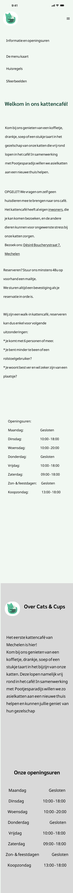

Redesign Website Kattencafé Cats & Cups
Van wireframe tot volledig interactief prototype met focus op accessibility.
Voor deze opdracht ontwierp ik een mobile-first redesign van de website van Cats & Cups, een kattencafé in Mechelen. Ik onderzocht hoe de bestaande website toegankelijker, duidelijker en gebruiksvriendelijker kon worden op mobiele apparaten.
Tijdens het volledige ontwerpproces stond accessibility centraal. Ik hield rekening met de WCAG-richtlijnen en werkte naar niveau AA toe, van kleurgebruik en contrast tot navigatie en contentstructuur.
De opdracht
Ontwerp een mobile-first website voor een café, brasserie of restaurant, met toegankelijkheid als uitgangspunt. De website moest bezoekers in staat stellen om: informatie over de zaak te vinden; het menu te bekijken; een bestelling te plaatsen; contact op te nemen. Daarnaast moest de website zowel een happy flow als unhappy flow voor het bestelproces bevatten en voldoen aan de WCAG-richtlijnen op niveau AA. Voor mijn uitwerking koos ik voor Cats & Cups, een kattencafé in Mechelen. Hierdoor kon ik een realistische context combineren met mijn focus op accessibility en gebruiksvriendelijkheid.
Probleemstelling
De bestaande website bevatte veel informatie maar had een onduidelijke navigatiestructuur. Gebruikers vonden moeilijk belangrijke informatie terug zoals reserveringen, openingsuren en het aanbod van het café.
De opdracht
Ontwerp een mobile-first website voor een café, brasserie of restaurant, met toegankelijkheid als uitgangspunt.
De website moest bezoekers in staat stellen om:
- Informatie over de zaak te vinden
- Het menu te bekijken
- Een bestelling te plaatsen
- Contact op te nemen
Daarnaast moest de website zowel een happy flow als unhappy flow voor het bestelproces bevatten en voldoen aan de WCAG-richtlijnen op niveau AA.
Voor mijn uitwerking koos ik voor Cats & Cups, een kattencafé in Mechelen. Hierdoor kon ik een realistische context combineren met mijn focus op accessibility en gebruiksvriendelijkheid.
Probleemstelling
De bestaande website bevatte veel waardevolle informatie, maar de mobiele ervaring kon beter. Belangrijke informatie zoals openingsuren, reserveringen, het menu en contactgegevens waren niet altijd snel terug te vinden. Hierdoor moesten bezoekers vaak extra stappen zetten om hun doel te bereiken.
De uitdaging
Hoe kan ik de mobiele website van Cats & Cups toegankelijker, duidelijker en gebruiksvriendelijker maken?
Cats & Cups bevat veel verschillende soorten informatie: praktische informatie, het menu, reservaties en informatie over de katten die in het café verblijven. Op de bestaande website was deze informatie verspreid over verschillende pagina's, waardoor gebruikers niet altijd snel vonden wat ze zochten.
Tijdens mijn analyse merkte ik daarnaast verschillende mogelijke toegankelijkheidsproblemen op. Zo waren er op sommige delen van de startpagina groene teksten op een lichtgroene of blauwe achtergrond, waardoor het contrast beperkt was. Ook was niet altijd duidelijk welke teksten klikbare links of interactieve elementen waren.
Mijn doel was daarom om een mobiele ervaring te ontwerpen waarin bezoekers snel hun weg vinden, belangrijke informatie gemakkelijk kunnen lezen en zonder onnodige drempels een bestelling kunnen plaatsen.



Research & Analyse
Voor ik begon met ontwerpen onderzocht ik eerst hoe de bestaande website functioneert op mobiel. Daarbij focuste ik op zowel gebruiksvriendelijkheid als toegankelijkheid.
Gebruiksvriendelijkheid
- Hoe gemakkelijk vinden bezoekers informatie?
- Is de navigatie duidelijk?
- Hoe verloopt het bestelproces?
- Kunnen gebruikers hun doel snel bereiken?
Toegankelijkheid
- Is de tekst voldoende leesbaar?
- Is er voldoende kleurcontrast?
- Zijn interactieve elementen herkenbaar?
- Is de inhoud logisch gestructureerd?
Wireframes
Voordat ik begon aan het uiteindelijke ontwerp werkte ik eerst wireframes uit. Op deze manier kon ik de structuur en navigatie testen zonder afgeleid te worden door kleuren of visuele details.


In deze fase lag de focus op een duidelijke navigatie, overzichtelijke informatiehiërarchie en een eenvoudige bestelervaring.
Van wireframe naar prototype
Vanuit de wireframes werkte ik het ontwerp verder uit tot een volledig visueel prototype. Voor de interface koos ik voor een rustig groen kleurenpalet, passend bij de uitstraling van Cats & Cups. Tegelijkertijd stond toegankelijkheid centraal: kleuren en tekstcombinaties werden gekozen en gecontroleerd op voldoende contrast volgens WCAG AA.
Naast kleur en contrast besteedde ik aandacht aan een duidelijke navigatie, herkenbare interactieve elementen en een overzichtelijke contentstructuur.


Reflectie
Dit project heeft me geleerd dat accessibility geen extra laag is die je achteraf toevoegt aan een ontwerp, maar iets waar je vanaf het begin rekening mee moet houden.
Tijdens dit project werd ik mij bewuster van het belang van kleurcontrast, leesbaarheid en een duidelijke informatiehiërarchie. Ik leerde om niet alleen te kijken naar hoe een ontwerp eruitziet. maar vooral naar hoe gemakkelijk verschillende gebruikers de informatie kunnen begrijpen en gebruiken.
In toekomstige projecten wil ik nog vroeger gebruikerstesten uitvoeren zodat toegankelijkheidsproblemen sneller zichtbaar worden en ontwerpkeuzes beter onderbouwd kunnen worden.